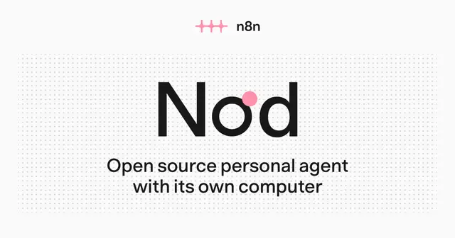
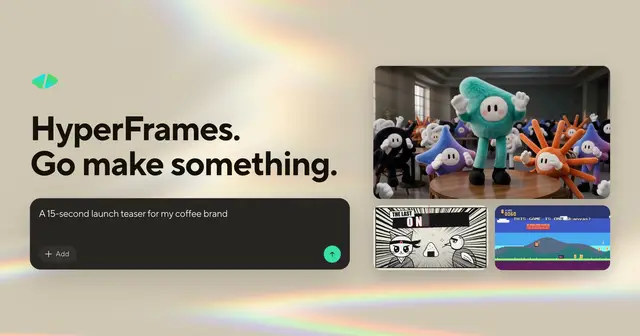

AI tools the brief has covered, sorted by job. 31 tools · checked Nov 28. Noticed, not endorsed.
Job
Pillar
31 tools

Free + usageSeen in 2 issues
n8n Labs · Automate a chore · Run a small business
Nod
An open-source personal agent with its own sandboxed computer and browser. It chases invoices, preps calls and cancels trials on real websites, and asks before it acts.
Like ChatGPT's agent mode, but it runs on your own machine, uses the AI provider you choose, and asks before every action.
IntermediateFree · you pay your AI provider4.4k on GitHub · Nov 28
Details, sources and coverage
AIAutomate a choreRun a small business
What it is
An open-source personal agent with its own sandboxed computer and browser. It chases invoices, preps calls and cancels trials on real websites, and asks before it acts.
Try first
Give it one errand: check a pricing page every week and tell you when it changes.
Skip it if
You don't want to manage API keys or an AI provider bill.
Skill level · Intermediate
A desktop installer, then you connect your AI provider and apps.
Price · Free + usage
Nod is open source (Apache 2.0) and free; you pay your model provider, or connect a model running on your own computer. Research preview.
Turn a small app Claude builds in a chat (an artifact) into a Mac or Windows app with its own icon and window. It can use your connectors and, with permission, send notifications.
Like Canvas in ChatGPT or Gemini, but the thing you made becomes a real desktop app you open every day.
BeginnerBeta on all Claude plans · Pro US$20/mo
Details, sources and coverage
AIBuild an app or site
What it is
Turn a small app Claude builds in a chat (an artifact) into a Mac or Windows app with its own icon and window. It can use your connectors and, with permission, send notifications.
Try first
Ask Claude for a one-screen tracker you'd use daily, then install it.
Skip it if
You need a phone app, or your organization has turned the feature off.
Skill level · Beginner
Ask Claude for a small tool, then press Install as app. No coding or packaging.
Price · Included
Rolling out in beta on all plans in Claude for Mac and Windows; requests count toward your plan's usage limits. Claude Free is US$0; Pro is US$20/mo (US$17/mo billed yearly).
Google's official way for AI agents to use Gmail, Drive, Docs, Sheets, Slides, Calendar, Chat and Tasks, with user confirmations, audit logs and admin controls.
Like connecting Gmail to Claude or ChatGPT, but Google's own governed connector that any agent can use.
AdvancedStandard tier at no cost, with quotas
Details, sources and coverage
AIAutomate a chore
What it is
Google's official way for AI agents to use Gmail, Drive, Docs, Sheets, Slides, Calendar, Chat and Tasks, with user confirmations, audit logs and admin controls.
Try first
Connect a test account and let an agent summarize one Drive folder.
Skip it if
You only use Gemini's built-in Workspace features. They already have access.
Skill level · Advanced
For developers and admins connecting agents to Workspace.
Price · Free + usage
Standard tier: no cost with published usage quotas. Scaled tier: charges for usage above daily free allowances from April 1, 2027.
Canva · Create images & video · Run a small business
Canva (and Canva MCP)
A template-first design platform. Its MCP server, generally available since Nov 2026, lets Claude, ChatGPT, Gemini and other assistants create editable Canva designs.
Like asking Claude or ChatGPT to make a flyer, but you get a real, editable, on-brand Canva design instead of a flat image.
BeginnerFree plan · Pro US$18/mo
Details, sources and coverage
AICreate images & videoRun a small business
What it is
A template-first design platform. Its MCP server, generally available since Nov 2026, lets Claude, ChatGPT, Gemini and other assistants create editable Canva designs.
Try first
Edit one promo template with your own photo and offer text, then resize it for a second format.
Skip it if
You only need the copy or a rough layout. Your assistant can draft that without a new tool.
Skill level · Beginner
Templates and editable text give you a starting point with no setup. The MCP connection for AI assistants is a developer step.
Price · Free + paid
US prices: Free US$0 with limited AI. Pro US$18/mo. Business US$25/mo per person. A 50% promotion was showing when checked. Canva MCP: sign up in the Canva Developer Portal.
Researched · not hands-on tested · Image: canva.dev
Usage-basedSeen in 1 issue
Anthropic · Code
Claude Ship
Claude reviews pull requests, fixes failing checks and merge conflicts (PR Steward), and approves changes your team's written policy allows (Claude Approvals).
Like asking Claude to review your code in a chat, but it sits on every GitHub pull request and can fix and approve within rules you set.
AdvancedClaude Team and Enterprise · billed on tokens
Details, sources and coverage
AICode
What it is
Claude reviews pull requests, fixes failing checks and merge conflicts (PR Steward), and approves changes your team's written policy allows (Claude Approvals).
Try first
Turn on Code Review in observe-only mode for one repository.
Skip it if
You're a solo builder without a review process. A chat review is enough.
Skill level · Advanced
For software teams on GitHub. You write the policy for what Claude may approve.
Price · Usage-based
Available on Claude Team and Enterprise plans for GitHub repositories. Code Review is generally available; PR Steward and Claude Approvals are in beta. Usage is billed on tokens, and admins can set spend limits.
A multi-model platform for generating and editing video, animating stills, and chaining steps into reusable workflows.
Like video generation in Gemini or ChatGPT, but with an editor, several video models side by side, and workflows you can reuse.
Intermediate125 one-time free credits · Standard US$12/mo billed yearly
Details, sources and coverage
AICreate images & video
What it is
A multi-model platform for generating and editing video, animating stills, and chaining steps into reusable workflows.
Try first
Animate a single still with one camera move.
Skip it if
You need one short clip. Try the video feature already in your assistant subscription first.
Skill level · Intermediate
A usable clip takes practice with reference images, motion prompts and retries.
Price · Free + paid
Free: 125 credits once, not monthly. Standard US$12/mo billed yearly (625 credits a month). Pro US$28/mo billed yearly (2,250). Max US$76/mo billed yearly (9,500). A first-year discount was running when checked.
Researched · not hands-on tested · Image: runway.com
CDChromeDevTools/chrome-devtools-mcp
FreeSeen in 2 issues
Google Chrome · Code · Build an app or site
Chrome DevTools MCP
Gives coding agents Chrome DevTools through MCP (Model Context Protocol) or a CLI, so they can open a real browser, check their work and run Lighthouse audits.
Like Claude in Chrome or ChatGPT's agent clicking around, but for developers: the agent inspects and tests the site it just built.
AdvancedFree · Apache 2.0 license59.6k on GitHub · Nov 28
Details, sources and coverage
AICodeBuild an app or site
What it is
Gives coding agents Chrome DevTools through MCP (Model Context Protocol) or a CLI, so they can open a real browser, check their work and run Lighthouse audits.
Try first
Ask your agent to load your site and report the slowest part of the page.
Gemini can operate Mac apps and websites in a background window while you keep working, with a live preview in the chat.
Like Claude's or ChatGPT's computer use, but built into the Gemini app for Mac and running in the background.
BeginnerGoogle AI Plus, Pro or Ultra · U.S., English
Details, sources and coverage
AIAutomate a chore
What it is
Gemini can operate Mac apps and websites in a background window while you keep working, with a live preview in the chat.
Try first
Ask it to collect three numbers from a website into a spreadsheet.
Skip it if
You're outside the U.S., on Windows, or on a free Google account.
Skill level · Beginner
Built into the Gemini Mac app; you choose which apps it may use.
Price · Paid
Requires an Apple silicon Mac on macOS 15 or later, a personal Google account (18+), and Google AI Plus, Pro or Ultra. Rolling out in English in the U.S.
Researched · not hands-on tested · Image: blog.google
Free + paidSeen in 1 issue
Suno · Create images & video
Suno (with Visuals)
An AI music maker. Its Visuals tab turns songs into short lip-synced video clips or cover art.
Like asking ChatGPT or Gemini for song lyrics, but you get the finished, sung track and a clip to go with it.
BeginnerFree (50 credits) · Pro US$10/mo
Details, sources and coverage
AICreate images & video
What it is
An AI music maker. Its Visuals tab turns songs into short lip-synced video clips or cover art.
Try first
Make a 30-second jingle for something you care about.
Skip it if
You need music you can use commercially on the free plan. Commercial use needs a paid plan.
Skill level · Beginner
Type an idea, get a song. Studio features go deeper.
Price · Free + paid
Free US$0 with 50 song credits. Pro US$10/mo (US$8 billed yearly) with commercial use rights. Premier US$30/mo. Visuals are part of the top Platinum plan.
Researched · not hands-on tested · Image: suno.com
AAanthropics/skills
FreeSeen in 4 issues
Anthropic · Automate a chore · Write & summarize
Anthropic Agent Skills
Anthropic's public library of Agent Skills: folders of instructions and scripts that teach Claude and other agents repeatable tasks such as making documents and spreadsheets.
Like custom instructions in ChatGPT, but packaged per task, shareable, and loaded only when the task comes up.
IntermediateFree to use with Claude201.5k on GitHub · Nov 28
Details, sources and coverage
AIAutomate a choreWrite & summarize
What it is
Anthropic's public library of Agent Skills: folders of instructions and scripts that teach Claude and other agents repeatable tasks such as making documents and spreadsheets.
Try first
Add one document skill and ask Claude for a formatted report.
Skip it if
You only chat casually. Skills pay off when you repeat the same task.
Skill level · Intermediate
Skills install into Claude or a coding agent; reading one is easy, writing your own takes practice.
Price · Free
Public repository; licenses vary by skill. Using skills counts toward your Claude plan or API usage.
Long-running Perplexity agents that own ongoing work, such as watching competitors or chasing stalled sales conversations, and bring results back for review.
Like scheduled tasks in ChatGPT or Deep Research in Gemini, but each teammate keeps a standing job, remembers it, and can take requests in Slack.
IntermediateNeeds Perplexity Max
Details, sources and coverage
AIResearchRun a small business
What it is
Long-running Perplexity agents that own ongoing work, such as watching competitors or chasing stalled sales conversations, and bring results back for review.
Try first
Create one teammate that watches three competitor pricing pages and reports weekly.
Skip it if
You need one research answer, not an ongoing job. Deep research in your current assistant covers that.
Skill level · Intermediate
Setup is guided, but you have to connect tools and describe the work it should own.
Price · Paid
Launched on the web for Perplexity Max subscribers, iPhone app promised. Free and Pro users can upgrade in Settings. Max price is listed on Perplexity's pricing page.
Researched · not hands-on tested · Image: opencode.ai

Free + paidSeen in 4 issues
HeyGen · Create images & video
HyperFrames
HeyGen's free, open-source way to make videos with an AI agent: the agent writes each scene as HTML and HyperFrames renders it to video.
Like asking Claude or ChatGPT for a video script, but your agent actually builds and renders the video, scene by scene.
IntermediateFree, open source · Studio Pro US$25/mo91.6k on GitHub · Nov 28
Details, sources and coverage
AICreate images & video
What it is
HeyGen's free, open-source way to make videos with an AI agent: the agent writes each scene as HTML and HyperFrames renders it to video.
Try first
Make a 20-second product teaser from your own website in the Studio app.
Skip it if
You need filmed footage edited, not motion graphics.
Skill level · Intermediate
The Studio app needs no code; the agent-skill route uses Claude Code, Codex or Cursor.
Price · Free + paid
Framework, CLI, agent skills and browser editor are free (Apache 2.0) with no watermark on local renders. HyperFrames Studio has a Free plan; Pro is US$25/mo with 25,000 credits.
Free, open-source CAD for AI agents such as Codex and Claude Code: it generates STEP, STL and 3MF models, checks design for manufacturing, and makes drawings.
Like asking ChatGPT to describe a bracket, but you get a real 3D model file you can print or send to a machine shop.
AdvancedFree · MIT license27.6k on GitHub · Nov 28
Details, sources and coverage
AIAdvanced manufacturingBuild an app or site
What it is
Free, open-source CAD for AI agents such as Codex and Claude Code: it generates STEP, STL and 3MF models, checks design for manufacturing, and makes drawings.
Try first
Ask for a simple wall bracket with exact dimensions and print it.
Skip it if
You don't make physical parts. This is for makers and engineers.
Skill level · Advanced
You run it through a coding agent and should know basic CAD and 3D printing.
Price · Free
The project's site says it is 100% open source and free; MIT license on GitHub.
Researched · not hands-on tested · Image: texttocad.dev
AFadobe.com
Free + paid
Adobe · Create images & video
Adobe Firefly
Adobe's generative suite for images, vectors, video and audio, with Adobe and partner models, built to hand off into Creative Cloud apps.
Like image generation in ChatGPT or Gemini, but the output drops straight into Photoshop, Illustrator and Premiere for real production work.
IntermediateFree daily generations · Standard US$9.99/mo
Details, sources and coverage
AICreate images & video
What it is
Adobe's generative suite for images, vectors, video and audio, with Adobe and partner models, built to hand off into Creative Cloud apps.
Try first
Generate one product still from a reference image before trying video.
Skip it if
You only need a few concept images. ChatGPT or Gemini will do that inside a plan you already pay for.
Skill level · Intermediate
A single image is easy to try; a full campaign means managing models, reference frames and credits.
Price · Free + paid
US list prices: Firefly Free has limited daily generations. Standard US$9.99/mo (2,000 credits). Pro regularly US$19.99/mo (4,000). Pro Plus regularly US$49.99/mo (10,000). Introductory discounts were running when checked.
A multi-model image and video platform with Cinema Studio for camera direction and studios for ads and short videos.
Like asking Gemini or ChatGPT for a video, but you direct the camera move and lens look instead of hoping the prompt lands.
IntermediateFree to explore · Starter US$19/mo
Details, sources and coverage
AICreate images & video
What it is
A multi-model image and video platform with Cinema Studio for camera direction and studios for ads and short videos.
Try first
Try one slow push-in on a product photo you own.
Skip it if
Your current video model already makes a usable shot. Use your assistant for scripts and shot lists instead.
Skill level · Intermediate
Presets help, but choosing a model and directing camera motion takes practice. The MCP connection is a separate, more technical path.
Price · Free + paid
Free plan: 0 monthly credits, selected models only. Starter US$19/mo (270 credits). Plus list price US$59/mo (1,200 credits). A Black Friday sale ending Nov 29, 2026 was running when checked.